Sical: Edição Limitada
Este projeto foi desenvolvido no ambito da cadeira de Projeto III, no Instituto Politécnico do Cávado e do Ave. Teve como objetivo o desenvolvimento de três embalagens para uma edição especial de packaging para uma marca à escolha. Neste caso, esta edição teria pelo menos oito embalagens. A marca escolhida foi a Sical, tendo como conceito base a intensificação das origens do café e a personalização do café, para que o consumidor pudesse criar o seu próprio café em casa, a partir dos grãos de café fornecidos em cada embalagem desta edição especial. Se o consumidor comprasse três destas embalagens, teria uma oferta de um organizador, de forma a organizar melhor as embalagens, e também uma oferta de um pequeno recipiente de madeira para que a mistura de café fosse mais prática.
 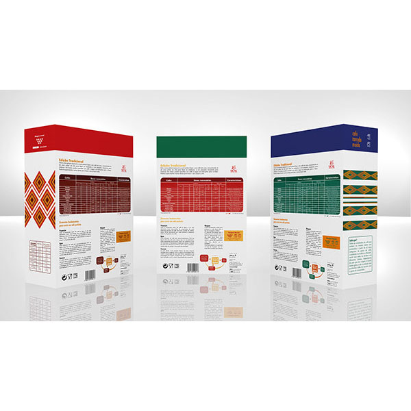
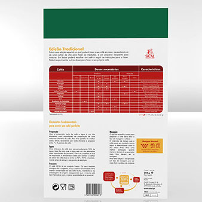
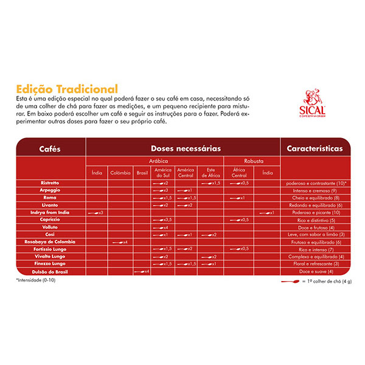
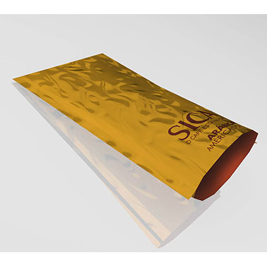
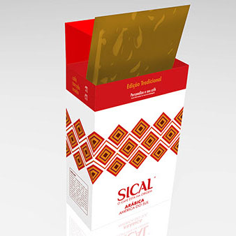
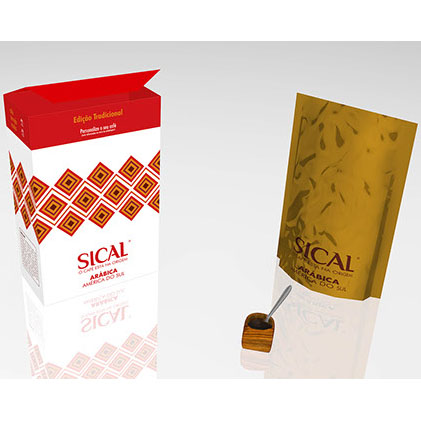
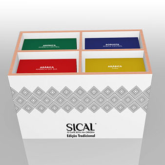
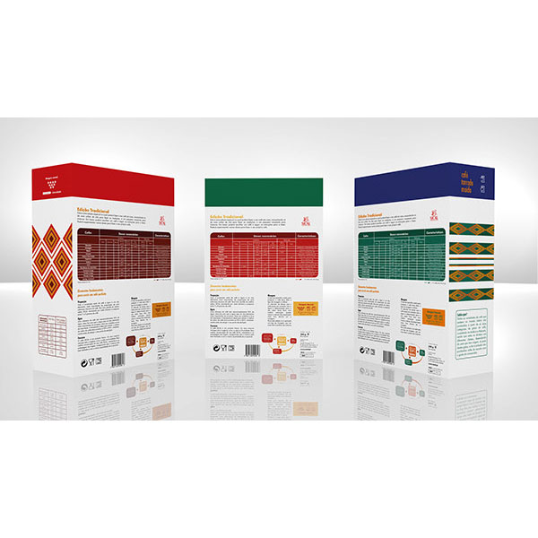
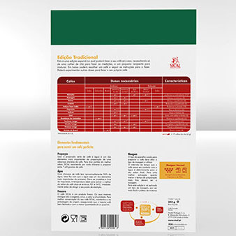
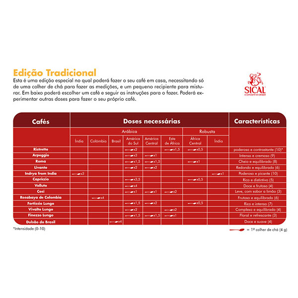
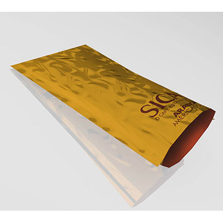
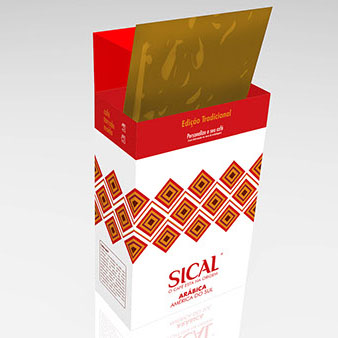
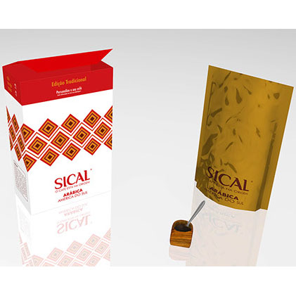
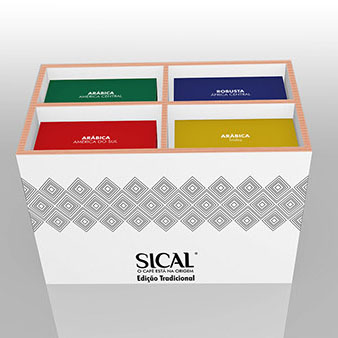